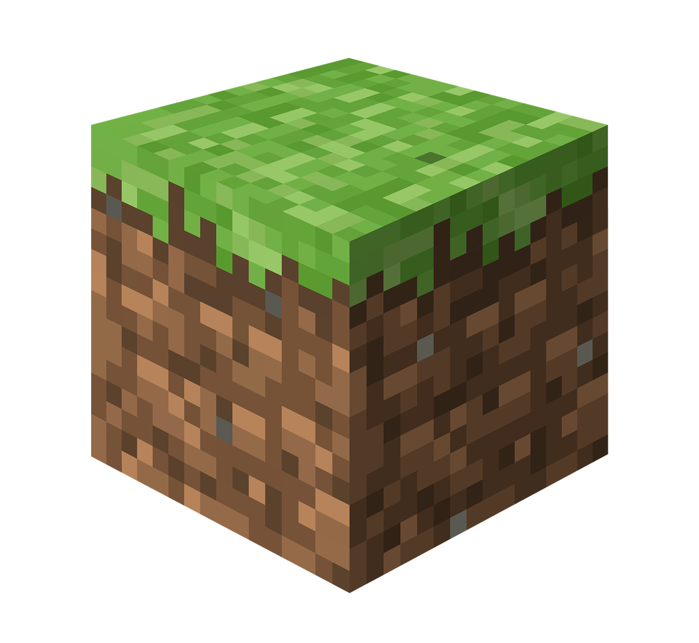
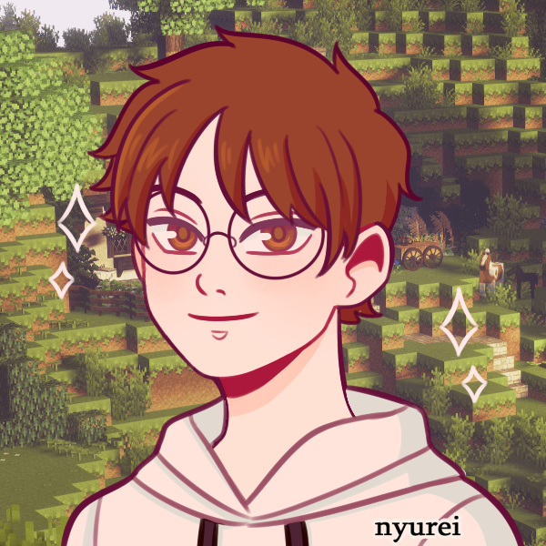

Sobre mim

Me chamo Nicolas Bastos, tenho 18 anos, e sou um desenvolvedor com conhecimento em JS, Delphi, C, HTML e CSS. Sempre gostei muito de programação, amava assistir videos de pessoas programando com "Command Block" no Minecraft, podia ser feito qualquer coisa com um código. Assim comecei a me aprofundar na área de programação e pretendo me aprofundar cada vez mais.
Soft Skills

 Github
Github
 Linkedin
Linkedin